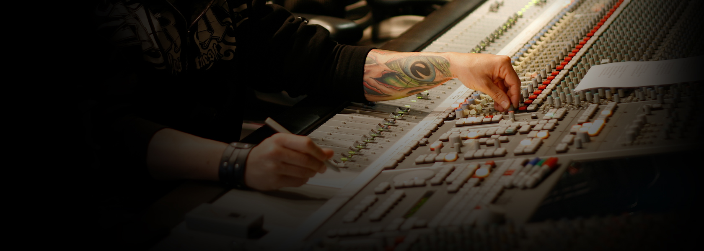

Hi, I’m Cedrick Courtois, a professional audio engineer specializing in music mixing.
Since 1997, I’ve worked with both established artists and up-and-coming talent,
helping them achieve clear, powerful, release-ready mixes.
After over 30 years of experience, my focus is simple:
make your music sound professional on any system while preserving its emotion and identity.

Mixing
Online mixing has made it possible to reach talents from all over the world.
It's a simple and easy process: You record your tracks, upload them, and after we discuss your goals I send you a mix!
Your satisfaction is my #1 goal. So if revisions are needed, I will work till you're happy.
Rates
My base rate for mixing is $499/song.
However, I do offer alternate rates based on the complexity/simplicity of the mix.
Discounts also available for LP's
This rate also includes up to 10 revisions
Please note that mixing services do NOT include the following:
• Pitch correction
• Timing correction
*Vocal tuning and timing corrections can be a time consuming process. As such an additional fee will be required.
Listen
"Machine" — Metal
"Been a long time" — Band: Earshot - Hard Rock
"Hope Im Wrong" — Dance-Pop-EDM
"Crazy" — Band: New Black 7even - Country Rock
Artist: Patrick Croome - singer songwriter
Jazz
"Dance" — Artist: CRISS - Pop-EDM
"Mars" — Band: The Thieves About - Rock
"Find Myself" — Hard Rock
Post Production
From feature film re-recording mix to sound design for action sports viral clips,
I have been providing audio post production services for over a decade ...
Some of my clients include RedBull Media House, Monster Energy, Mad Media, NBC and ESPN.
Voice Over/ADR Recording
Audio Sweetening/Restoration
Music Editing
Sound Design
Mix
“Here at Mad Media – we’re constantly tackling high-profile adrenalized automotive projects
for big name clients. Whether it’s Formula 1 racing for Red Bull, or covering 24 Hours at Daytona
for Continental Tire – these projects are nationally televised properties, and the stakes are always high.
When it comes to sound design and meeting the demands of these networks for deliverables, the challenge is
always to make the sound as best as it can possibly be – while meeting tight deadlines.
The only person we trust for that is Cedrick Courtois. Ced consistently delivers outstanding results
under incredible time constraints. His design is both technically proficient, as well as creative.
It is always a treat to lay his work back to picture and watch our stories come to life!
I would highly recommend Cedrick for any project that requires premium, professional sound design.” -Joshua Martelli – Mad Media COO and Co-Director of Ken Block’s Gymkhana 1/2/3 films
Training
Working on it...
Other Services
Coming (kinda) soon...
About Me
Cedrick’s journey in the music world started at an early age.
Playing drums at 4, picking up piano by 11, he finally settled on guitar at 15
and played in his first band by 17.
After graduating from high school, he enrolled at The University of Rennes, France studying
Biology and Chemistry with the intent of becoming a Marine Biologist and received a Bachelor’s Degree in Biology in 1994.
However his passion for music lead him to a new career path and earning
an Associate’s Degreein Audio Engineering at ESRA Institute in France.
After interning at various studios in Paris, he then decided to move across the pond
and landed in Houston, Texas where he ended up First Engineer at Sunrise Sound Studios,
working with the likes of Beyonce, Destiny’s Child, Ludacris, Chris Walker (Al Jarreau), Lenny Kravitz,
Michelle Williams, Earshot, Scarface, Marcel Khalife, and Solange Knowles.
In April of 2007, he came to L.A. to play guitar on the third Earshot album,
packed his bags again and decided to further his journey and moved to Hollywood.
He joined the engineering team of the soundtrack for the rock opera “Repo! The Genetic Opera”,
an eclectic and challenging project, from tracking vocals with Sarah Brightman, Paul Sorvino,
Anthony Head and Paris Hilton, to mixing tracks featuring Ray Luzier, Blasko, David J, Danny Lohner and Richard Patrick.
From there, Cedrick worked as a Music Editor on an independent film called
‘Montana Amazon: The Adventures of the Dunderheads’, featuring Olympia Dukakis,
Haley Joel Osment, and Alison Brie, eventually earning him his first Re Recording Mixer credit.
You can also hear some of his Sound Design work on action sports feature films such as
‘The Windsurfing Movie II’ by Poor Boyz Productions, Red Bull’s Formula One and GRC viral videos,
Monster Energy’s SuperCross commercials and MadMedia/UTVUnderground’ s XP1K series featuring Polaris RZR.
His passion for music has led him to work on a broad range of genres,
from Metal to Country, Gospel to Dance music, Pop to Classical.
Today Cedrick freelances out of his own studio , The Castle, where he shares time between Music Mixing
and Sound Design/Audio post. He also writes music for TV Licensing (workout products commercials such as
‘Beach Body’ and ’10 minute Abs’ to name a few).
Some of his clients include Keri Kelli ( Alice Cooper ), Tim’Ripper’ Owens ( Judas Priest, Y. Malmsteen ),
Tony Cardenas ( Great White), Brentt Arcement ( Live, Fiona Apple ), The New Black 7 ( www.thenewblack7.com ),
Tom Curren ( 3x Surf World Champion ), RedBull Media House, Monster Energy, Mad Media ( www.madmedia.com).
Contact
Ready to book a session?
Have a question about services?
Fill out the contact form and tell me about your project.
Feel free to reach out via the form above or through your preferred channels.